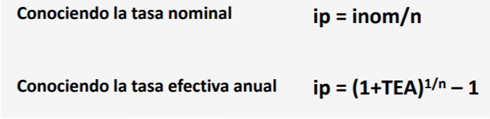
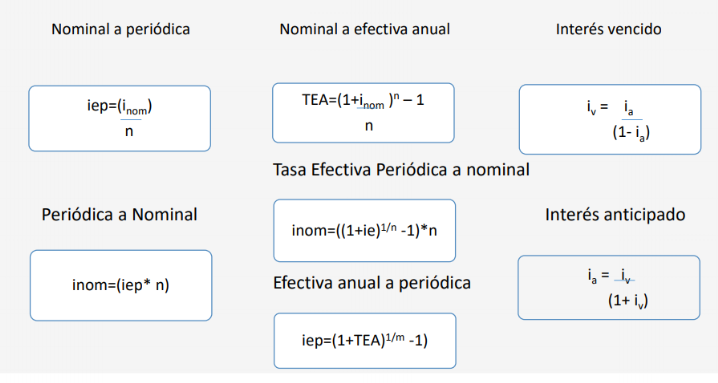

En términos prácticos, la tasa de interés es el precio del dinero tanto para el que lo necesita porque paga por tenerlo, como para el que lo tiene por que cobra un precio por prestar al que lo necesita . (Meza, J . 2017 )
Mide tanto el rendimiento como el costo.
El nivel de las tasas esta afectado por : inflación, devaluación, riesgo empresarial, oferta y demanda.
Tipos de tasa:
En la mayoría de los casos, las tasas que se manejan en nuestro sistema financiero viene expresada para un periodo anual y son de dos clases:
Tasa Nominal
• Expresada anualmente, indica que parte de ella será cobrada periódicamente
• Está compuesta por valor anual de la tasa, periodo de liquidación de los intereses y modalidad de liquidación de los intereses (vencidos o anticipados)
• Es un tasa de referencia (existe solo de nombre)
Ejemplo:
24% TV, se pacta 24% anual pero se va a cobrar la cuarta parte al final de cada trimestre.
Tasa Efectiva
• Mide el costo efectivo de un crédito o mide la verdadera rentabilidad de una inversión durante el plazo determinado
• La tasa efectiva anual resulta de la reinversión de los intereses periódicos (diarios, semanales, quincenales, etc.) durante un periodo anual
• Supone interés compuesto
Tasa Periodica
• Es la tasa que se utiliza para calcular los interés de un periodo determinado (flujos de cajas)
• Se puede calcular con base en la nominal o con base en la efectiva

